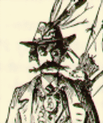
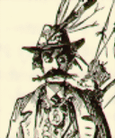
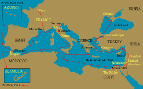
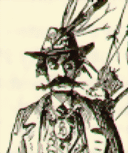

| 
With the help of computer technology this map attempts to display two different things. First, the route MT took on the Quaker City excursion -- which you can follow by scrolling along the red line. At the same time, the 13 places named in yellow are active links. Clicking on any of them will take you to a passage in Innocents Abroad about that place. And when MT's book is reconceived this way -- geographically, or geo-culturally -- what begins to appear is a map of the racial and ethnic prejudices shared by the book and its American audience. The lines in this ideological map aren't always clearly drawn. Innocents Abroad is rhetorically opportunistic rather than thematically coherent. MT's perspective often switches around, and whenever his point-of-view changes so does the site he's looking at. He offers a graphic description, for example, of Venice by day; a few minutes and paragraphs later, however, and Venice by night is a different place altogether. He finds things to mock and to admire almost everywhere he goes. But as you'll see by comparing what he writes about northern locales like Paris and Odessa with what he writes about Mediterranean Europe, or comparing any of these passages with the way he describes non-white and non-Christian peoples in Africa and Asia, many of the variations in the narrative's tone can be linked directly to racial preconceptions. (A good instance of this is the way his nose comes increasingly into play as people's skins get darker; after only a brief time in Constantinople, for example, he can talk without irony about what Turks "smell like.") Some of the links -- Jerusalem and the Sphinx, in particular -- are to the passages that MT's contemporary readers seem to have enjoyed the most. But most of the others were picked to display the pattern of the book's preconceptions. Some fans of MT may decide that what this map chiefly exposes is my own biased reading of the text, but I've tried to be fair. You can check to see how fairly I've chosen by clicking on the graphic of the "Siamese twins" at the bottom right of each "page"; that will take you to the whole chapter from which the passage comes. (Clicking on the icon of the map at the bottom left will bring you back to the map.) Innocents Abroad was the most popular travel book of MT's times. Its irreverent humor, its blithe assertion of America's readiness to take on the world, even (as the advertising would put it) its length and its lavish illustrations -- all these were major reasons for its extraordinary appeal to American readers. At the same time, the book's way of looking at Europe, Africa and Asia add up to a tour of the ideological world inside many of MT's contemporaries' heads. |
